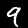
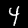
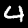
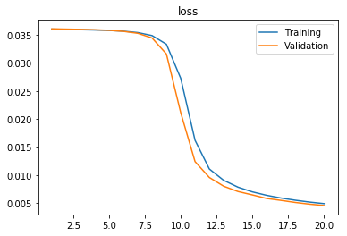

Lab 1: Convolutional Neural Networks
In this first Lab, we discover a Deep Learning framework (Pytorch), which we use to create our very first CNN (LeNet) and use it to perform handwritten character recognition.
This Lab assumes that you are familiar with the Python language. If you’re not, please do Lab 0 first: https://colab.research.google.com/drive/16XlCqmmUQvwBD3D5u0lOy1rUFfDDZdYi
Introduction
What’s a CNN?
Convolutional Neural Networks are a subclass of Neural Networks that use Convolutional layers. These layers are basically sliding filters and work quite well for vision tasks.
What’s a framework and why are we using one (PyTorch)?
A programming framework is a collection of functions and utilities that is ready to use. Modern Deep Learning frameworks contain everything that is needed (layers, optimizers, losses, gradient computation…) to create and use neural networks, and make that really easy.
PyTorch, originally created by Facebook, is one of the most used frameworks, especially among researchers. The other most used framework are Tensorflow (created by Google) and Keras (an abstraction layer for multiple frameworks, including Tensorflow). PyTorch has gained a lot of popularity since its 1.0 release in 2018.

Why use Google Colab and GPUs?
Google Colab is a collaborative workspace based on Jupyter Notebook, that lets you use a Python environment on Google Cloud with GPUs, for FREE!
GPUs (Graphical Processing Units) are powerful chips that let you train and use neural networks much faster than CPUs. Having access to a GPU is very important for Deep Learning, as it can often make training more than 100x faster. It might not seem that huge at first, but state of the art neural nets can take days to train on common datasets, even with multiple powerful GPUs. On CPUs, it would take years.
Colab gives you access to a free Nvidia Tesla K80 (most of the time), which is a 1000€ graphics card with 24GB of VRAM.

/!\ IMPORTANT: Use a GPU Runtime
To use a GPU in Colab, go to Runtime -> Change Runtime Type -> Hardware Accelerator -> GPU.
Do this step before running any of the code below, otherwise you will have to run it again.
Importing libraries
For this lab, we only need PyTorch packages: “torch” and “torchvision”.
“torch“ contains the Deep Learning framework itself. “torchvision“ contains datasets, pre-trained models, and image manipulation functions.
1 | #Import Pytorch |
1.1.0
Downloading the data
使用最常用的mnist数据集，通过 torchvision.datasets 来下载数据集。
参数：
- root 下载的路径
- train 选择是训练集还是测试集
- download 是否下载
- 是否对数据进行变换，在torchvision.transforms中有许多变换函数
1 | mnist_dataset = torchvision.datasets.MNIST(root = ".", train=True, download=True) |
Downloading http://yann.lecun.com/exdb/mnist/train-images-idx3-ubyte.gz to ./MNIST/raw/train-images-idx3-ubyte.gz
9920512it [00:01, 8710591.75it/s]
Extracting ./MNIST/raw/train-images-idx3-ubyte.gz
Done!
(<PIL.Image.Image image mode=L size=28x28 at 0x7FF31D48D7B8>, 0)
We see that each element is a tuple containing a PIL Image (Python Imaging Library) and a label (0 here).
We can visualize PIL images in Colab using the display function.
数据集中的每一个元素是一个tuple，第0位是PIL image, 第1位是label。
可以使用 display() 函数对图像进行显示
1 | display(mnist_dataset[128][0]) |
Part 1: Looking at the data
Q1: Display 10 images with their label
显示十个图像和他们的label
1 | for i in range(10): |
5

0

4

1

9

2

1
3
1

4

Q2: Display 10 images from a specific class
显示10个label为4的图像
1 | count = 0 |

4
4
4

4
4
4

4
4
4
4
Q3: Count the number of elements in each class
计算每一个标签有多少个元素
1 | count = [0]*10 |
[5923, 6742, 5958, 6131, 5842, 5421, 5918, 6265, 5851, 5949]
Part 2: Creating a Neural Network with torch.nn
我们使用经典的lenet网络
Q4: Implementing the network
All networks created with torch.nn are subclasses of nn.Module.
所有由 torch.nn 创建的网络都是 nn.Module 的子类。
为了创建一个网络，我们需要定义两个函数
- 在 __init__ 函数中，我们要定义网络所有需要的部件（layer），称其为网络的属性。
- 在 forward 函数中，我们要通过一个给定的输入来定义所有layer的顺序。(不太懂define-by-run)
1 |
|
这里使用了 logSoftmax()，后面再配合NLLloss()。但是可以将这两部直接使用CrossEntropyLoss()代替(不再需要logsoftmax)
Testing our implementation
我们用数据集中的一个图像来测试我们刚刚搭建的网络
我们可以在前向传播的任意一点执行程序来debug我们的网络。 这是使用pytorch的众多好处之一。
动态计算意味着程序将按照我们编写命令的顺序进行执行。这种机制将使得调试更加容易，并且也使得我们将大脑中的想法转化为实际代码变得更加容易。而静态计算则意味着程序在编译执行时将先生成神经网络的结构，然后再执行相应操作。从理论上讲，静态计算这样的机制允许编译器进行更大程度的优化，但是这也意味着你所期望的程序与编译器实际执行之间存在着更多的代沟。这也意味着，代码中的错误将更加难以发现（比如，如果计算图的结构出现问题，你可能只有在代码执行到相应操作的时候才能发现它）
pytorch 运算单元为张量，就是N维矩阵，可以使用直接打印张量，也可以使用x.size()来查看大小。
1 | ## Create an instance of our network |
tensor([[-2.3397, -2.2196, -2.3458, -2.2699, -2.2840, -2.2333, -2.3094, -2.2939,
-2.3768, -2.3664]], grad_fn=<LogSoftmaxBackward>)
这里最后的grad_fn是pytorch里Variable中的特性，会在另外一篇文章中专门写一下pytorch的autograd。
Part 3: Training the network
Choosing a loss function and an optimizer
选择损失函数和优化器。
1 | # Negative log likelihood loss |
Basic training bricks
网络的训练包括以下五步：
- 计算前向传播
1 | y = net(x) |
- 计算损失
1 | loss = criterion(y, label) |
- 将梯度设置为0，否则梯度默认会累积（利于RNN计算）
1 | optimizer.zero_grad() |
- 反向传播
1 | loss.backward() |
- 在loss.backward()获得所有parameter的gradient，然后optimizer存了这些parameter的指针，step()根据这些parameter的gradient对parameter的值进行更新。 根据现在的梯度对参数进行更新
1 | optimizer.step() |
Q5: Creating a basic training loop
首先实现最简单的训练，让数据集中的元素一个个的经过网络。
1 | ## MODIFY THIS LINE IF THE TRAINING TAKES TOO LONG (MAX 60000) |
HBox(children=(IntProgress(value=0, description='Epochs', max=5, style=ProgressStyle(description_width='initia…
HBox(children=(IntProgress(value=0, description='Samples', max=4000, style=ProgressStyle(description_width='in…
Training accuracy: 0.857
Training loss: tensor(0.4592)
HBox(children=(IntProgress(value=0, description='Samples', max=4000, style=ProgressStyle(description_width='in…
Training accuracy: 0.952
Training loss: tensor(0.1701)
HBox(children=(IntProgress(value=0, description='Samples', max=4000, style=ProgressStyle(description_width='in…
Training accuracy: 0.96275
Training loss: tensor(0.1162)
HBox(children=(IntProgress(value=0, description='Samples', max=4000, style=ProgressStyle(description_width='in…
Training accuracy: 0.9725
Training loss: tensor(0.0912)
HBox(children=(IntProgress(value=0, description='Samples', max=4000, style=ProgressStyle(description_width='in…
Training accuracy: 0.978
Training loss: tensor(0.0669)
Evaluating on a test set
使用测试集进行测试
1 | #Get the MNIST test set |
Number of test images: 10000
HBox(children=(IntProgress(value=0, max=10000), HTML(value='')))
Test Accuracy: 0.9566
Q6: Displaying a few random results from the test set
打印测试结果
HINT: to get the network output for a sample as a number, you can use:
1 | net(convert(sample[0]).unsqueeze(0)).max(1)[1] |
unsqueeze() 函数为在指定位置上增加维度，如一三行的tensor，则unsqueeze(0)后变为，一行三列的tensor。这里使用unsqueeze()是因为torch.nn不接受单独的样本，所以需要用其增加一个假维度。
max() 返回最大值，和其索引，参数为0则返回每列的最大值，1为返回每行的最大值
1 | import random |

tensor([7])

tensor([2])

tensor([1])

tensor([0])
Part 4: Creating a better training loop
Splitting between validation and training data
为数据集增加validation
1 | ## Load Dataset |
<torch.utils.data.dataset.Subset object at 0x7ff31c7957f0> 54000
<torch.utils.data.dataset.Subset object at 0x7ff31c795780> 6000
True
DataLoaders in PyTorch
In PyTorch, DataLoaders are tools that load batches of data from a Dataset (or any of its subclasses).
pytorch中的Dataloaders可以从数据集中以bath为单位装载数据。
Documentation on DataLoaders is here: https://pytorch.org/docs/stable/data.html
1 | ## This line creates a basic DataLoader from our mnist training set |
Q7: Use the DataLoaders
Dataloder支持iterator
1 | ## Print the length of the dataloader |
844
True
tensor([[[[0., 0., 0., ..., 0., 0., 0.],
[0., 0., 0., ..., 0., 0., 0.],
[0., 0., 0., ..., 0., 0., 0.],
...,
[0., 0., 0., ..., 0., 0., 0.],
[0., 0., 0., ..., 0., 0., 0.],
[0., 0., 0., ..., 0., 0., 0.]]],
[[[0., 0., 0., ..., 0., 0., 0.],
[0., 0., 0., ..., 0., 0., 0.],
[0., 0., 0., ..., 0., 0., 0.],
...,
[0., 0., 0., ..., 0., 0., 0.],
[0., 0., 0., ..., 0., 0., 0.],
[0., 0., 0., ..., 0., 0., 0.]]],
[[[0., 0., 0., ..., 0., 0., 0.],
[0., 0., 0., ..., 0., 0., 0.],
[0., 0., 0., ..., 0., 0., 0.],
...,
[0., 0., 0., ..., 0., 0., 0.],
[0., 0., 0., ..., 0., 0., 0.],
[0., 0., 0., ..., 0., 0., 0.]]],
...,
[[[0., 0., 0., ..., 0., 0., 0.],
[0., 0., 0., ..., 0., 0., 0.],
[0., 0., 0., ..., 0., 0., 0.],
...,
[0., 0., 0., ..., 0., 0., 0.],
[0., 0., 0., ..., 0., 0., 0.],
[0., 0., 0., ..., 0., 0., 0.]]],
[[[0., 0., 0., ..., 0., 0., 0.],
[0., 0., 0., ..., 0., 0., 0.],
[0., 0., 0., ..., 0., 0., 0.],
...,
[0., 0., 0., ..., 0., 0., 0.],
[0., 0., 0., ..., 0., 0., 0.],
[0., 0., 0., ..., 0., 0., 0.]]],
[[[0., 0., 0., ..., 0., 0., 0.],
[0., 0., 0., ..., 0., 0., 0.],
[0., 0., 0., ..., 0., 0., 0.],
...,
[0., 0., 0., ..., 0., 0., 0.],
[0., 0., 0., ..., 0., 0., 0.],
[0., 0., 0., ..., 0., 0., 0.]]]])
Q8: Create a DataLoader for the validation set
同样的方式给validation使用dataloader
1 | mnist_val_dl = torch.utils.data.DataLoader(val_set, batch_size=BATCH_SIZE, shuffle=True, num_workers=4) |
Using a GPU
为了让运算在GPU上进行，我们需要用cuda()函数将batch移动到GPU上。
1 | batch = torch.Tensor(next(iter(mnist_train_dl))[0]) |
同样的，使用cuda()将网络移植到GPU上
1 | ## Create an instance of our network |
测试一下
1 | output = net(batch) |
tensor([[-2.2496, -2.2465, -2.3473, -2.3269, -2.3198, -2.3962, -2.2808, -2.3959,
-2.1621, -2.3246],
[-2.2491, -2.2417, -2.3421, -2.3355, -2.3201, -2.3880, -2.2916, -2.3951,
-2.1630, -2.3226],
[-2.2500, -2.2550, -2.3535, -2.3268, -2.3125, -2.3907, -2.2792, -2.3997,
-2.1548, -2.3282],
[-2.2553, -2.2545, -2.3434, -2.3200, -2.3127, -2.3953, -2.2880, -2.4040,
-2.1455, -2.3334],
[-2.2513, -2.2498, -2.3574, -2.3193, -2.3051, -2.3952, -2.2874, -2.3989,
-2.1557, -2.3307],
[-2.2517, -2.2439, -2.3512, -2.3348, -2.3182, -2.3850, -2.2847, -2.3965,
-2.1562, -2.3279],
[-2.2512, -2.2551, -2.3502, -2.3282, -2.3064, -2.3870, -2.2891, -2.3970,
-2.1566, -2.3285],
[-2.2505, -2.2513, -2.3561, -2.3258, -2.3109, -2.3911, -2.2852, -2.3973,
-2.1542, -2.3281],
[-2.2516, -2.2497, -2.3511, -2.3215, -2.3018, -2.3900, -2.2891, -2.4002,
-2.1600, -2.3345],
[-2.2457, -2.2440, -2.3601, -2.3254, -2.3183, -2.3858, -2.2883, -2.3939,
-2.1705, -2.3158],
[-2.2511, -2.2438, -2.3493, -2.3325, -2.3185, -2.3958, -2.2782, -2.3907,
-2.1639, -2.3255],
[-2.2507, -2.2528, -2.3525, -2.3236, -2.3119, -2.3939, -2.2798, -2.4015,
-2.1570, -2.3267],
[-2.2571, -2.2424, -2.3539, -2.3254, -2.3203, -2.3893, -2.2838, -2.4012,
-2.1549, -2.3223],
[-2.2486, -2.2467, -2.3522, -2.3259, -2.3173, -2.3868, -2.2981, -2.3925,
-2.1630, -2.3172],
[-2.2514, -2.2511, -2.3469, -2.3301, -2.3107, -2.3830, -2.2960, -2.3962,
-2.1551, -2.3286],
[-2.2458, -2.2469, -2.3488, -2.3333, -2.3165, -2.3888, -2.2849, -2.3978,
-2.1654, -2.3208],
[-2.2413, -2.2510, -2.3632, -2.3166, -2.3084, -2.3880, -2.2906, -2.3988,
-2.1659, -2.3255],
[-2.2451, -2.2529, -2.3573, -2.3157, -2.3164, -2.3888, -2.2934, -2.3992,
-2.1548, -2.3268],
[-2.2503, -2.2504, -2.3439, -2.3264, -2.3140, -2.3946, -2.2888, -2.3939,
-2.1602, -2.3264],
[-2.2522, -2.2513, -2.3503, -2.3258, -2.3054, -2.3835, -2.2912, -2.4010,
-2.1545, -2.3346],
[-2.2451, -2.2426, -2.3602, -2.3312, -2.3160, -2.3904, -2.2852, -2.3970,
-2.1636, -2.3186],
[-2.2495, -2.2419, -2.3558, -2.3262, -2.3133, -2.3906, -2.2856, -2.4010,
-2.1629, -2.3231],
[-2.2455, -2.2500, -2.3498, -2.3308, -2.3121, -2.3836, -2.2918, -2.3926,
-2.1739, -2.3163],
[-2.2518, -2.2392, -2.3594, -2.3274, -2.3155, -2.3858, -2.2901, -2.3956,
-2.1661, -2.3178],
[-2.2492, -2.2485, -2.3483, -2.3257, -2.3169, -2.3943, -2.2902, -2.3956,
-2.1545, -2.3272],
[-2.2535, -2.2451, -2.3540, -2.3294, -2.3189, -2.3858, -2.2851, -2.3972,
-2.1586, -2.3218],
[-2.2484, -2.2553, -2.3578, -2.3296, -2.3079, -2.3865, -2.2841, -2.3963,
-2.1630, -2.3197],
[-2.2515, -2.2416, -2.3507, -2.3306, -2.3198, -2.3834, -2.2939, -2.3965,
-2.1601, -2.3208],
[-2.2530, -2.2472, -2.3479, -2.3281, -2.3179, -2.3893, -2.2871, -2.3980,
-2.1535, -2.3282],
[-2.2462, -2.2389, -2.3614, -2.3256, -2.3219, -2.3898, -2.2890, -2.4019,
-2.1572, -2.3195],
[-2.2521, -2.2456, -2.3462, -2.3293, -2.3137, -2.3905, -2.2852, -2.3963,
-2.1581, -2.3327],
[-2.2556, -2.2474, -2.3382, -2.3331, -2.3116, -2.3897, -2.2867, -2.3988,
-2.1578, -2.3303],
[-2.2482, -2.2566, -2.3535, -2.3242, -2.3099, -2.3876, -2.2933, -2.3972,
-2.1568, -2.3220],
[-2.2458, -2.2426, -2.3591, -2.3288, -2.3218, -2.3814, -2.2931, -2.3931,
-2.1645, -2.3184],
[-2.2469, -2.2424, -2.3518, -2.3288, -2.3185, -2.3942, -2.2822, -2.4004,
-2.1636, -2.3212],
[-2.2479, -2.2457, -2.3571, -2.3189, -2.3172, -2.3914, -2.2910, -2.3971,
-2.1604, -2.3231],
[-2.2475, -2.2499, -2.3540, -2.3260, -2.3162, -2.3965, -2.2786, -2.3959,
-2.1628, -2.3223],
[-2.2510, -2.2464, -2.3442, -2.3314, -2.3124, -2.3877, -2.2909, -2.3980,
-2.1572, -2.3303],
[-2.2508, -2.2410, -2.3470, -2.3257, -2.3149, -2.3994, -2.2841, -2.4011,
-2.1610, -2.3256],
[-2.2505, -2.2426, -2.3576, -2.3258, -2.3186, -2.3865, -2.2879, -2.3969,
-2.1624, -2.3206],
[-2.2464, -2.2476, -2.3491, -2.3319, -2.3155, -2.3912, -2.2847, -2.3945,
-2.1649, -2.3229],
[-2.2513, -2.2422, -2.3560, -2.3274, -2.3174, -2.3853, -2.2955, -2.3945,
-2.1575, -2.3225],
[-2.2468, -2.2480, -2.3572, -2.3199, -2.3168, -2.3960, -2.2866, -2.3976,
-2.1583, -2.3234],
[-2.2489, -2.2562, -2.3495, -2.3251, -2.3133, -2.3860, -2.2914, -2.3960,
-2.1535, -2.3296],
[-2.2502, -2.2405, -2.3475, -2.3375, -2.3183, -2.3872, -2.2880, -2.3920,
-2.1669, -2.3201],
[-2.2485, -2.2459, -2.3606, -2.3223, -2.3153, -2.3864, -2.2832, -2.3979,
-2.1652, -2.3236],
[-2.2530, -2.2487, -2.3475, -2.3211, -2.3158, -2.3915, -2.2929, -2.4006,
-2.1516, -2.3281],
[-2.2560, -2.2425, -2.3430, -2.3359, -2.3174, -2.3909, -2.2819, -2.3926,
-2.1589, -2.3303],
[-2.2454, -2.2492, -2.3632, -2.3174, -2.3149, -2.3910, -2.2952, -2.3935,
-2.1570, -2.3232],
[-2.2490, -2.2511, -2.3444, -2.3312, -2.3069, -2.3892, -2.2841, -2.3962,
-2.1602, -2.3368],
[-2.2544, -2.2470, -2.3511, -2.3255, -2.3141, -2.3874, -2.2884, -2.4005,
-2.1542, -2.3277],
[-2.2503, -2.2418, -2.3410, -2.3357, -2.3193, -2.3898, -2.2904, -2.3934,
-2.1664, -2.3200],
[-2.2456, -2.2445, -2.3542, -2.3286, -2.3163, -2.3860, -2.2909, -2.3977,
-2.1674, -2.3173],
[-2.2480, -2.2516, -2.3516, -2.3293, -2.3165, -2.3851, -2.2886, -2.3963,
-2.1582, -2.3239],
[-2.2528, -2.2583, -2.3459, -2.3284, -2.3144, -2.3838, -2.2924, -2.3973,
-2.1534, -2.3223],
[-2.2539, -2.2382, -2.3514, -2.3291, -2.3191, -2.3879, -2.2878, -2.3955,
-2.1599, -2.3267],
[-2.2547, -2.2498, -2.3432, -2.3298, -2.3157, -2.3909, -2.2847, -2.3966,
-2.1607, -2.3225],
[-2.2485, -2.2391, -2.3439, -2.3377, -2.3207, -2.3891, -2.2897, -2.3941,
-2.1662, -2.3196],
[-2.2505, -2.2533, -2.3467, -2.3262, -2.3103, -2.3942, -2.2868, -2.3975,
-2.1565, -2.3280],
[-2.2508, -2.2545, -2.3510, -2.3253, -2.3084, -2.3834, -2.2950, -2.3988,
-2.1516, -2.3313],
[-2.2537, -2.2451, -2.3405, -2.3270, -2.3199, -2.3960, -2.2837, -2.3978,
-2.1605, -2.3254],
[-2.2535, -2.2411, -2.3562, -2.3289, -2.3218, -2.3815, -2.2918, -2.3947,
-2.1615, -2.3177],
[-2.2496, -2.2454, -2.3588, -2.3243, -2.3090, -2.3904, -2.2906, -2.3978,
-2.1585, -2.3257],
[-2.2516, -2.2559, -2.3545, -2.3239, -2.3047, -2.3863, -2.2907, -2.3990,
-2.1581, -2.3242]], device='cuda:0', grad_fn=<LogSoftmaxBackward>)
Q9: Our new training/validation loop
启用新的训练，这次使用了dataloader并且增加了validatio。
1 | ##RE-RUN THIS CODE TO GET A "NEW" NETWORK |
1 | ## NUMBER OF EPOCHS TO TRAIN |
HBox(children=(IntProgress(value=0, description='Epochs', max=20, style=ProgressStyle(description_width='initi…
HBox(children=(IntProgress(value=0, description='Training Batches', max=844, style=ProgressStyle(description_w…
Training accuracy: 0.09942592592592593 Training loss: 0.036009652340853654
HBox(children=(IntProgress(value=0, description='Validation Batches', max=94, style=ProgressStyle(description_…
0.036064300735791525
0.09666666666666666
。。。。。。。。。。。。。。。。。。。。。。。。。
HBox(children=(IntProgress(value=0, description='Training Batches', max=844, style=ProgressStyle(description_w…
Training accuracy: 0.9074444444444445 Training loss: 0.004941175849211436
HBox(children=(IntProgress(value=0, description='Validation Batches', max=94, style=ProgressStyle(description_…
0.00460548147186637
0.9078333333333334
Q10: Making a graph with training/validation accuracy and loss
可视化训练结果
1 | import matplotlib.pyplot as plt |

Q11: Evaluate our network on the test set (on GPU)
同样使用dataloder进行测试
1 | #Get the MNIST test set |
HBox(children=(IntProgress(value=0, description='Test Batches', max=157, style=ProgressStyle(description_width…
tensor(0.1383, device='cuda:0')
91.49
(OPTIONAL) Part 5: Cats vs Dogs with a torchvision network
To test our skills on a new dataset, we will work on the famous Dogs vs Cats Kaggle dataset.

Kaggle is a website that hosts machine learning/data science competitions. Check it out! https://www.kaggle.com/

Downloading the data
First, go to the Kaggle website and create an account.
Then go to your account, click on Create New API Token - It will download kaggle.json file on your machine.
Upload the kaggle.json file using this code:
1 | ! pip install -q kaggle |
<input type="file" id="files-65ec0027-1fa8-4b32-bc71-a4d5bc6f7c57" name="files[]" multiple disabled />
<output id="result-65ec0027-1fa8-4b32-bc71-a4d5bc6f7c57">
Upload widget is only available when the cell has been executed in the
current browser session. Please rerun this cell to enable.
</output>
<script src="/nbextensions/google.colab/files.js"></script>
Saving kaggle (1).json to kaggle (1).json
{'kaggle (1).json': b'{"username":"wangzeyao","key":"6d3445d98da97c96f236cda74bbd2105"}'}
Download the dogs vs cats dataset using this code:
1 | ! mkdir ~/.kaggle |
mkdir: cannot create directory ‘/root/.kaggle’: File exists
401 - Unauthorized
Extract the archives:
1 | ! rm -rf test1 train |
Put the data in separate directories:
1 | ! mkdir train/cats |
Q12: Load the data
Using ImageFolder from torchvision (https://pytorch.org/docs/stable/torchvision/datasets.html#imagefolder), load the dataset.
The training set is in the “train” directory.
1 | ### YOUR CODE HERE |
Q13: Display a few images
As before, display a few images with the display function. You can see that these images have varying sizes.
1 | ### YOUR CODE HERE |
Using a torchvision model
torchvision has a repository of popular models ready to use for diverse computer vision tasks (classification, segmentation,…)
https://pytorch.org/docs/stable/torchvision/models.html#classification
1 | ## You can change the model if you want |
Q14: Resize the images on the fly using torchvision transforms
We can see from the documentation that torchvision models expect at least 244x244 images.
Using torchvision.transforms, create a new ImageFolder dataset with on-the-fly resizing of images.
Split this Dataset into training and validation sets, as before.
Create a DataLoader for each set as well, just like before.
1 | ### YOUR CODE HERE |
Q15: Training the model
Write the training loop. You should be able to pretty much copy-paste the one from Q9.
1 | LEARNING_RATE = 0.001 |
1 | ### YOUR CODE HERE |
Q16: Test the network
Compute some predictions on the test set.
1 | ### YOUR CODE HERE |
Q17: Going further
Try different networks from torchvision, and different parameters. The winner of the competition got more than 98% accuracy. How much can you get?
Data augmentation (modifying your input data to make “more” of it) is a huge thing in deep learning. Try some techniques such as random cropping and rotation using torchvision transforms in your Dataset objects!
PyTorch has a lot of tutorials to get you started: https://pytorch.org/tutorials/index.html
Have fun!